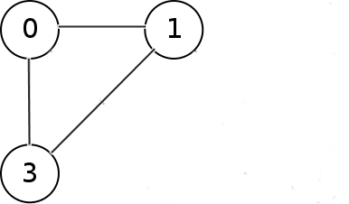
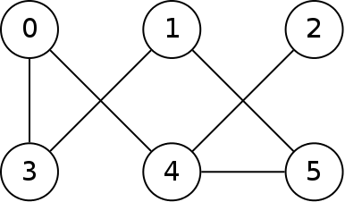
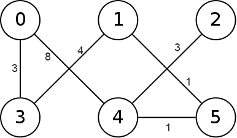
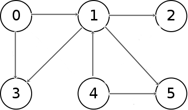
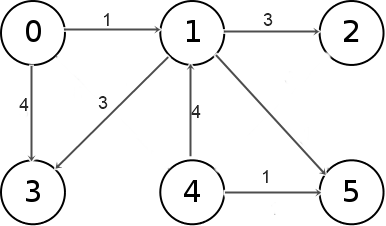
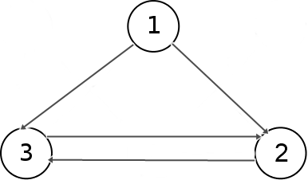
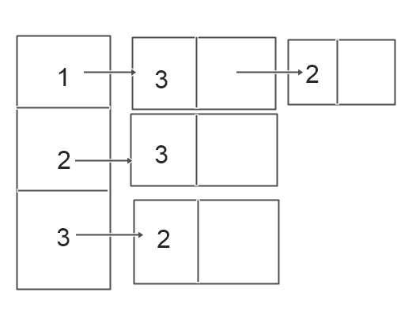
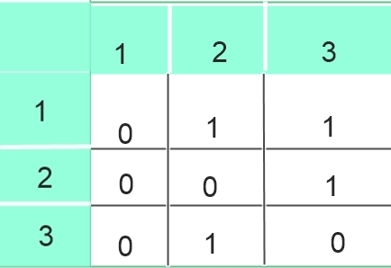

Graph:
A graph is a non-linear data structure that consists of a set of
vertices and a set of edges, connecting the pairs of the
vertices.
A vertex can be connected to any number of other vertices
using edges.
An edge may be bidirectional or directed (one-way).
An edge may have a weight on it that indicates a cost for
traveling over that edge in the graph.
Directed Graph:When the edges in a graph have a direction,and the each edge can be traversed in specified direction the graph is called a directed graph.
Un-Directed Graph: When the edges in a graph do not have a direction and each edge can be traversed in either direction is called undirected graph
Weighted Graph: When the graph contains the weight or cost of travelling over that edge the graph is called weighted graph.
Un-weighted Graph: Edges do not have weight,edges simply show connections.
Connected Graph: A graph is said to be connected, if there exist a path between every pair of vertices
Path:sequence of vertices in which each pair of successive vertices is connected by an edge
Length of a path: Number of edges in the path or sum of weight of edges in the path
Cycle: a path that starts and ends on the same vertex.
Connected Graph:

Undirected Unweighted Graph:

Undirected weighted Graph:

Directed Unweighted Graph:

Directed weighted Graph:

Representation of Graphs:
The two main graph representations are the adjacency list and the adjacency matrix:
An adjacency list is a list of lists. Each list corresponds to a vertex u and contains a list of edges (u ,v) that originate from u. Thus, an adjacency list takes up Θ(V + E) space.

Adjacency List Representation:

An adjacency matrix is a |V|x|V| matrix of bits where element (i, j) is 1 if and only if the edge
(vi; vj) is in E. Thus an adjacency matrix takes up Θ(|V|x|V|) storage
Adjacency Matrix Representation:

Applications of Graphs:
It is used in Transportation Systems
It is used in Computer Networks e.t.c.